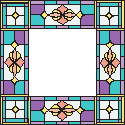
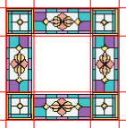
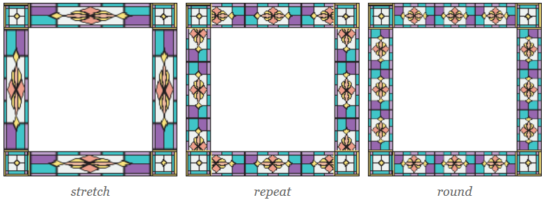
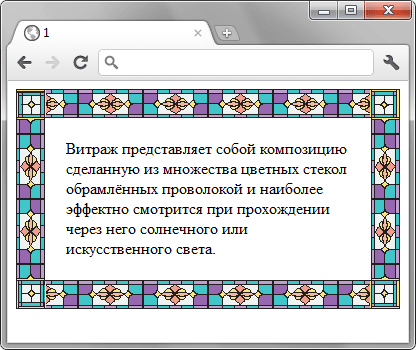

Синтаксис
none
Не отображает рисованную рамку,
используется установленный стиль границы.
URL
Путь к графическому файлу.
Обязательный параметр.
Само изображение для создания рамки продемонстрировано на рис. 1 и состоит из девяти областей: четырёх уголков, верхней, правой, нижней, левой стороны и центральной части, в которой выводится содержимое элемента.

<число>
Одно, два, три или четыре значения,
которые указывают размеры частей изображения
в пикселах, задавая тем самым области деления.
Сами единицы не пишутся, только число
(10, а не 10px).
На рис. 2 красными линиями выделены
необходимые для создания рамки области.

| Число значений | Результат |
|---|---|
| 1 | Устанавливает границы одинаковой толщины на каждой стороне рисунка. |
| 2 | Первое значение устанавливает высоту верхней и нижней границы, второе — левой и правой. |
| 3 | Первое значение определяет высоту верхней границы, второе — левой и правой, а третье — высоту нижней границы. |
| 4 | Поочередно устанавливается размеры верхней, правой, нижней и левой границы. |
<проценты>
Аналогично <числу>, но значения
задаются в процентах.
Тот или другой параметр обязателен.
<толщина>
Через слэш пишется одно, два, три или
четыре значения толщины границы на каждой
стороне элемента. Является аналогом
border-width и использует тот же синтаксис.
stretch
Растягивает рисунок границы до размеров элемента.
Это значение используется по умолчанию.
repeat
Повторяет рисунок границы.
round
Повторяет рисунок и масштабирует его так,
чтобы на стороне элемента оказалось
целое число изображений.

Пример:
<!DOCTYPE html>
<html>
<head>
<meta charset="utf-8">
<title>border-image</title>
<style>
div {
border: 30px solid #40c4c8;
padding: 20px;
-moz-border-image:
url(images/bg-image.png) 30 round round;
-webkit-border-image:
url(images/bg-image.png) 30 round round;
-o-border-image:
url(images/bg-image.png) 30 round round;
border-image:
url(images/bg-image.png) 30 round round;
}
</style>
</head>
<body>
<div>
Витраж представляет собой композицию сделанную
из множества цветных стекол обрамлённых проволокой
и наиболее эффектно смотрится при прохождении
через него солнечного или искусственного света.
</div>
</body>
</html>
